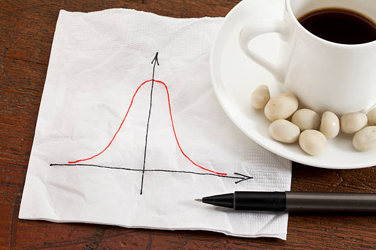

Eseje o ryzyku
Teksty o losowości, zdarzeniach skrajnych i o tym, skąd finanse wzięły swoje narzędzia do mierzenia ryzyka. Eseje są w języku angielskim i otwierają się na mojej stronie naukowej.

I Can't Predict a 1,000-Year Catastrophe
How many years must one wait to experience the financial catastrophe against which today's regulatory system protects us? The answer, which can be found in supervisory documents, is: a thousand years. The 0.999 quantile — the central parameter of the Basel safety system — is there explicitly interpreted as an event occurring once every thousand years. This formulation, reproduced without further comment in academic textbooks and in sectoral practice, is the point of departure for the present paper.
August 2026Czytaj esej ↗Wszystkie eseje
9 kolejnych tekstów
The Taming of Chance – How the World Became Random
Until the nineteenth century, science assumed the world was governed by hidden, deterministic causes. Then something shifted: chance stopped being a symptom of ignorance and became the very nature of things — first in physics, then, more consequentially, in the description of human beings and markets.
August 2026Czytaj ↗A Hundred Years of the Return Period and the Hundred-Year Flood
A century ago, engineers faced a deceptively simple question: how high should a dike be built to survive a flood that strikes once every hundred years? Out of that question grew an entire statistical apparatus — the return period, the assumption of stationarity, extreme value theory — tools that finance later borrowed, often without acknowledging their origin. Before turning to how this machinery was transplanted into banking, it is worth seeing where it originated, and how hydrologists themselves began questioning its foundations.
August 2026Czytaj ↗Not Normal, Not Heavy-Tailed, the World Is What It Is
The normal distribution was meant to describe the possible manifestations of financial reality — until it turned out not to work. The response was heavy-tailed distributions, meant to better capture extreme values. The problem is that these new concepts grew out of the very same assumptions as the ones before them — the randomness of financial phenomena.
August 2026Czytaj ↗Does the Normal Distribution Even Emerge?
Behind the "1,000-year event" used in financial regulation lies a hidden step nobody questions: arranging risk realizations along a time axis, exactly as hydrologists do with floods. But hydrology's version rests on a physical clock — the Earth's yearly orbit. Finance has none, which raises the question: does normal distribution even emerge from this process at all?
August 2026Czytaj ↗Worlds: the Expected → the Extreme
Value at Risk models describe everyday life and extreme situations using one shared probability distribution. This article argues that's flawed: extreme events belong to an entirely different category of phenomena — one Extreme Value Theory, despite coming closest, still fails to truly separate out.
August 2026Czytaj ↗How Finance Borrowed Its Randomness
Every model used to price risk today — Value at Risk, credit-default formulas, Basel's capital requirements — rests on a single inherited assumption: that market movements are random. This article traces how that idea, borrowed from physics and formalized by Bachelier and Wiener, was built up through Black-Scholes, Merton, and Vasicek into the regulatory architecture used today, and how even the 2008 crisis left its foundations untouched.
August 2026Czytaj ↗This Time Is Different Syndrome and Destabilizing Stability
Eight centuries of financial crises reveal the same pattern: right before every crash, someone insists this time is different. Reinhart and Rogoff called this the "this-time-is-different syndrome." Minsky's related thesis goes further: it's calm markets themselves that are dangerous, since they encourage risk to build up unseen.
August 2026Czytaj ↗99.9% Quantile, Rarity, Unexpected Situation
Why was AMA — long regarded as Basel's most precise tool for pricing operational risk — withdrawn from regulation? The answer lies in three concepts the regulator left undefined: rarity, the 99.9% quantile, and the "unexpected situation." Filled for years with intuition rather than precision, these gaps led institutions applying the same formula to widely divergent results.
June 2026Czytaj ↗Financial Security in the Face of the 2023 Crisis Episode
The 2023 crisis episode, although limited in scale, continues to attract the attention of regulators. In May 2026, the General Manager of the Bank for International Settlements (BIS) devoted a separate speech to it, formulating a conclusion that might sound surprising: the bank failures occurred despite the banks having met capital and liquidity requirements. The source of the problems lay in qualitative factors — weak management, insufficient risk culture, unsustainable business models.
May 2026Czytaj ↗Publikacje, badania i konferencje – w jednym miejscu.